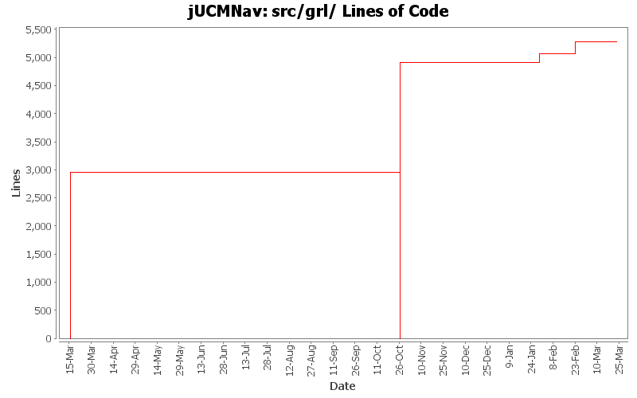

Summary Period: 2005-03-15 to 2006-03-23
[root]/src/grl
 impl
(20 files, 9632 lines)
impl
(20 files, 9632 lines)
 util
(2 files, 1209 lines)
util
(2 files, 1209 lines)

Total Lines Of Code:
5276 (2006-03-31 18:01)
| Author | Changes | Lines of Code | Lines per Change |
|---|---|---|---|
| Totals | 105 (100.0%) | 8234 (100.0%) | 78.4 |
| jfroy | 88 (83.8%) | 5276 (64.1%) | 59.9 |
| etremblay | 12 (11.4%) | 2958 (35.9%) | 246.5 |
| jkealey | 5 (4.8%) | 0 (0.0%) | 0.0 |
Created command test cases for GRL
Fixed bug when saving Evaluation and LinkRef
0 lines of code changed in:
Fix the URNlink to support multiple links type. Modification of the links display in UCM
0 lines of code changed in:
Added URNlink dialog, actions and commands
0 lines of code changed in:
Ended name change.
77 lines of code changed in:
Name change for EvaluationScenario (now called Strategy)
133 lines of code changed in:
Added actor evaluation level.
Fixed bug when entering non integer for evaluation level
0 lines of code changed in:
Added:
-Delete commands for scenario and evaluation
-Delete action for evaluation
Fixed:
-NullPointer exception with scenarioView (in property view)
-Adding new elements in model when in scenario view
-Contribution and decomposition refresh
-Dispose labels in IntentionalElementEditPart and LinkRefEditPart
0 lines of code changed in:
Added scenario author, color modification when scenario selected and fixed NullPointerException in Scenario view when closing the editor.
0 lines of code changed in:
Evaluation scenario view added.
0 lines of code changed in:
Merge of GRL branch with the main trunk
155 lines of code changed in:
Merge grl branch with the main trunk
Major modification of the metamodel (URN_08.mdl) (Added GRL metamodel, New interfaces that define common element in GRL and UCM, Modified UCM-Map package to implement the new interfaces (some associations and attributes have been refactored using the interfaces), Map is now called UCMmap (to resolve conflict with java.util.map in the implementation), Removed Path Graph)
Modification of the code that used the metamodel.
Started modification of jUCMNav to support GRL.
4911 lines of code changed in:
***This build could not compile
Merging the grl branch in the main trunk. Problem during the merging with the grl package.
Need to delete this package.
0 lines of code changed in:
regenerated the EMF code using EMF 2.1; slight changes; doesn't seem to have affected anything
0 lines of code changed in:
Upgraded meta-model to version 7.
bug 193 - ReqElemStartPointAttributes
properties view shows workload attribute as a nested attribute (instead of original dialog box proposal)
properties view doesn't refresh its descriptors every time you change a property. (property descriptors are properly cached by implementing the PropertyID class with hashCode and equals that work better than Object[]'s)
0 lines of code changed in:
The new meta model was generated in the code.
The start, empty and end point are not in the palette anymore. Use the path tool to create them from now on.
Deleted the marquee in the palette since the selection tool do the same thing...
0 lines of code changed in:
URN model version 5 is now generated in EMF.
0 lines of code changed in:
- You can add multiple path in one diagram.
- The path tool is close to work like planned.
- To extend a path, select the end point of the path you want to extends, select the end point tool and then click where you want to extend.
0 lines of code changed in:
- The new model is now working.
- Creating path works (do/undo)
- Extending path works (do/undo)
- SplitLinkCommand doesn't work
- BSplineConnectionRouter works #1!
2958 lines of code changed in:
Generated by StatCVS 0.2.4